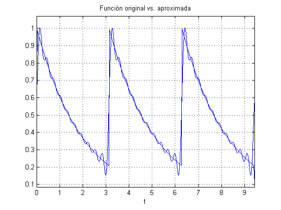
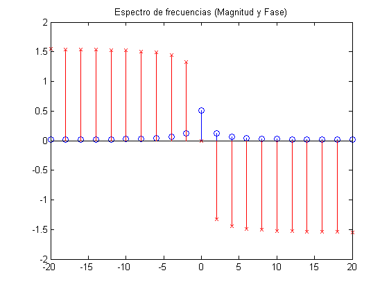
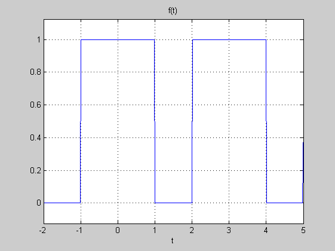
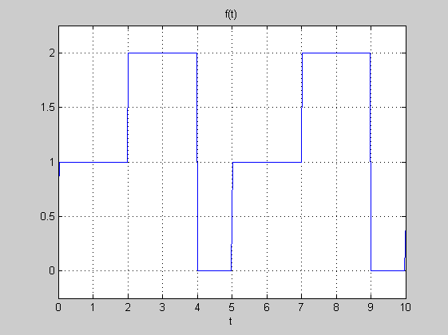
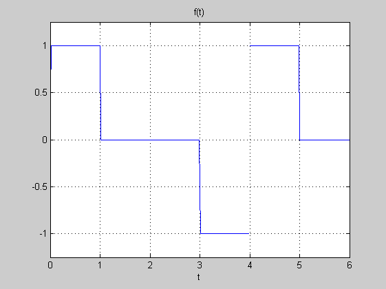
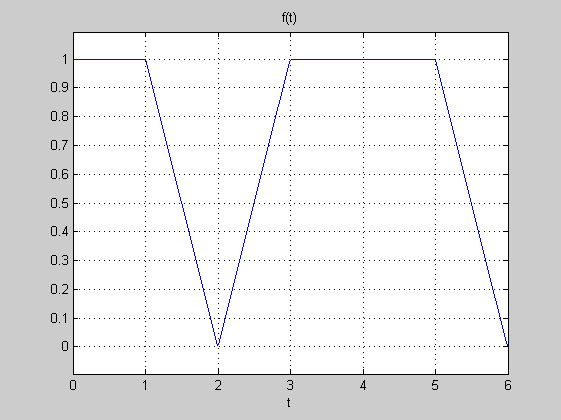
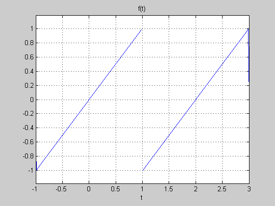

Contents
Inicialización del guión
A continuación se ilustrará la visualización de series de Fourier exponenciales precalculadas. Para todas las las series calculadas, se usan 10 términos positivos/negativos.
syms t; k=10; % Variable simólica t, k=Cantidad de términos de cada lado (positivos/negativos)
Ejemplo hecho en clase
T=pi; w0=2*pi/T; % Parámetros de la función original: Periodo y frecuencia fundamental. f=pulso(t-T/2,T)*exp(-t/2); % Función original f0=repetir(f,3,T); % Periodicidad ezplot(f0,[0 3*T]); grid on; hold on; n=-k:k; D0=2*(1-exp(-pi/2))/pi; % Término de corriente directa (DC) Dn=D0*(1-4i*n)./(16*(n.^2)+1); % Vector con los términos de la serie con k términos de cada lado Dn(k+1)=D0; % Sustituyendo D0 en el vector de coeficientes faprox=sum(Dn.*exp(1i*n*w0*t)); % Función aproximada por la serie ezplot(faprox,[0 3*T]); title('Función original vs. aproximada'); hold off;
Ejemplo de espectro
Cada coeficiente está asociado con una frecuencia múltiplo de la frec. fundamental w0. El espectro de frecuencia es otra forma de representar una función pero no en el dominio del tiempo (t) sino en el dominio de la frecuencia (w)
W=n*w0; % Dominio del gráfico (frecuencias múltiplos de la fundamental) M=abs(Dn); % Magnitud de cada coeficiente complejo F=angle(Dn); % Ángulo (o argumento) de cada coeficiente complejo stem(W,M); hold on; title('Espectro de frecuencias (Magnitud y Fase)'); stem(W,F,'rx'); hold off;
Ejercicios
Hallar (en papel) la serie de Fourier exponencial correspondiente a cada una de las siguientes funciones, luego escribir las expresiones en Matlab para graficar una función aproximada con k términos positivos/negativos como en el código de ejemplo.
f=pulso(t,2); f1=repetir(f,3,3); ezplot(f1,-2,5); title('f(t)'); grid on;
f=pulso(t-1,2)+2*pulso(t-3,2); f2=repetir(f,3,5); ezplot(f2,0,10); title('f(t)'); grid on;
f=pulso(t-0.5,1)-pulso(t+0.5,1); f3=repetir(f,3,4); ezplot(f3,0,6); title('f(t)'); grid on;
f=(t+2)*pulso(t+1.5,1)+pulso(t,2)+(2-t)*pulso(t-1.5,1); f4=repetir(f,3,4); ezplot(f4,0,6); title('f(t)'); grid on;
f=t*pulso(t,2); f5=repetir(f,3,2); ezplot(f5,-1,3); title('f(t)'); grid on;